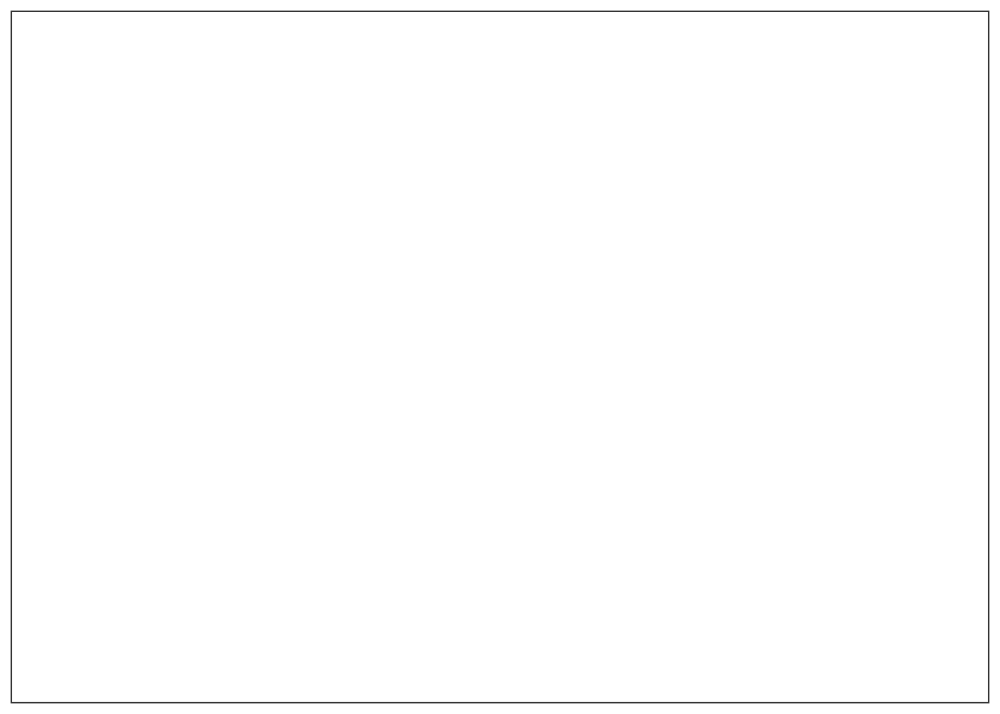
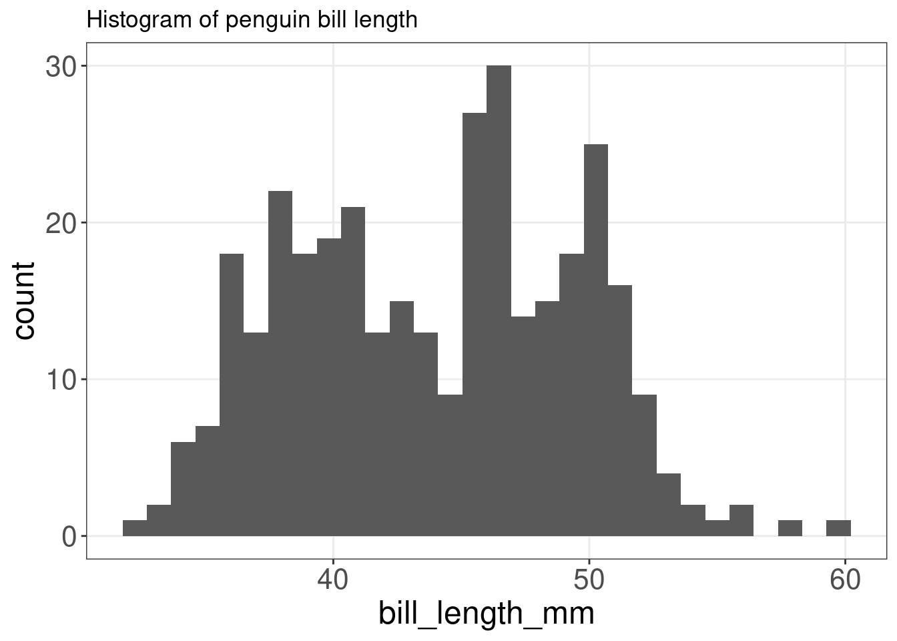
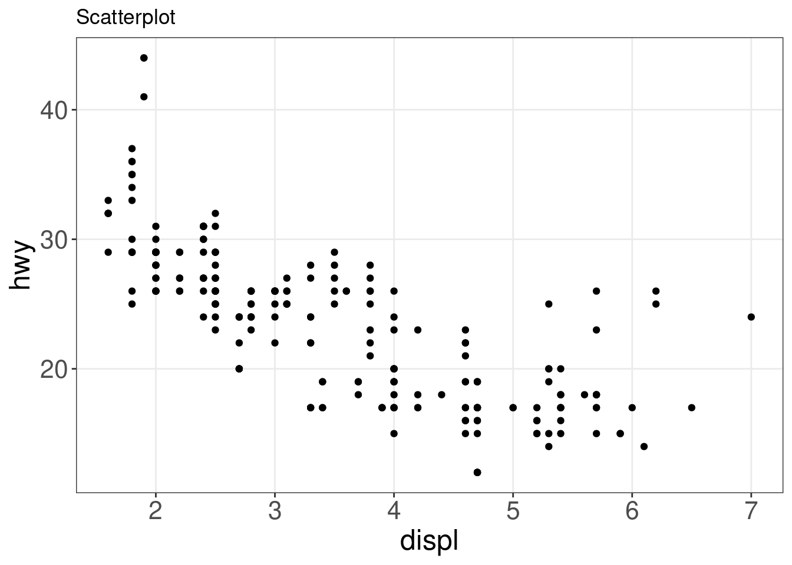
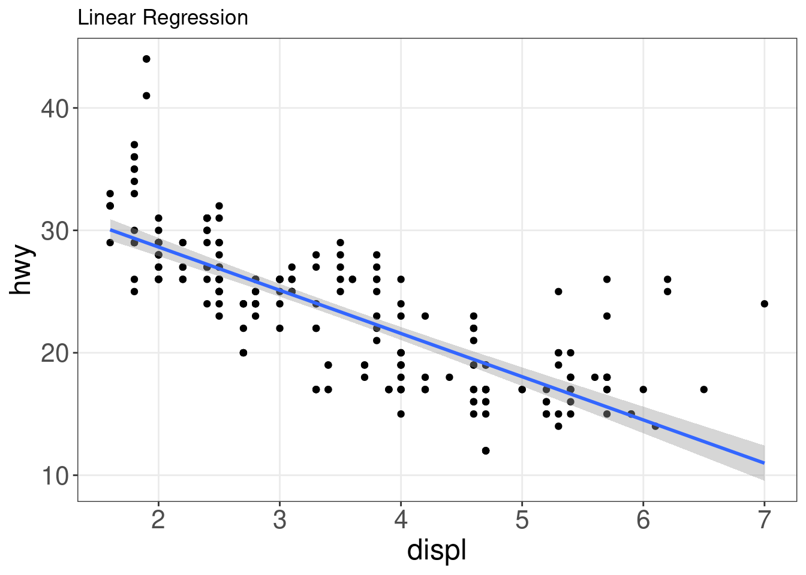
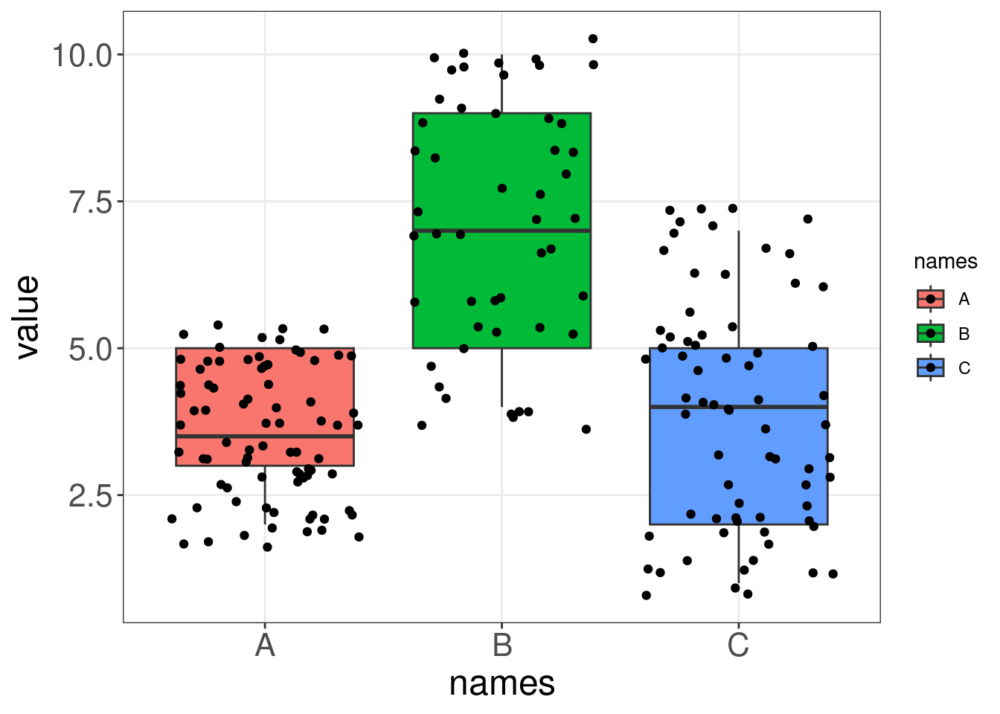
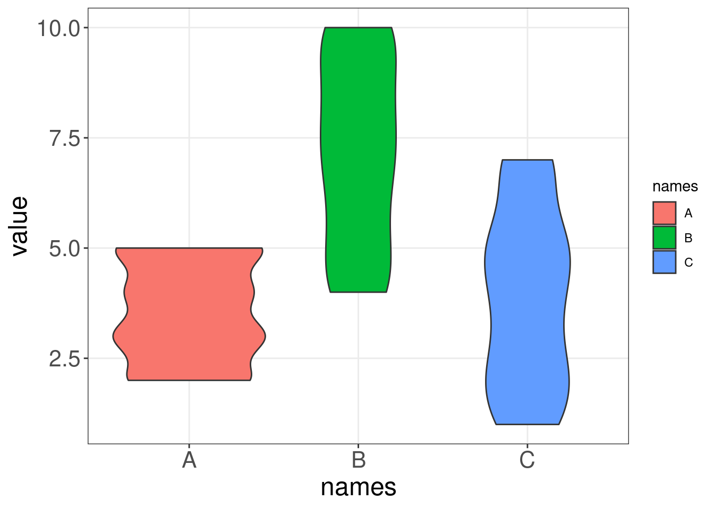
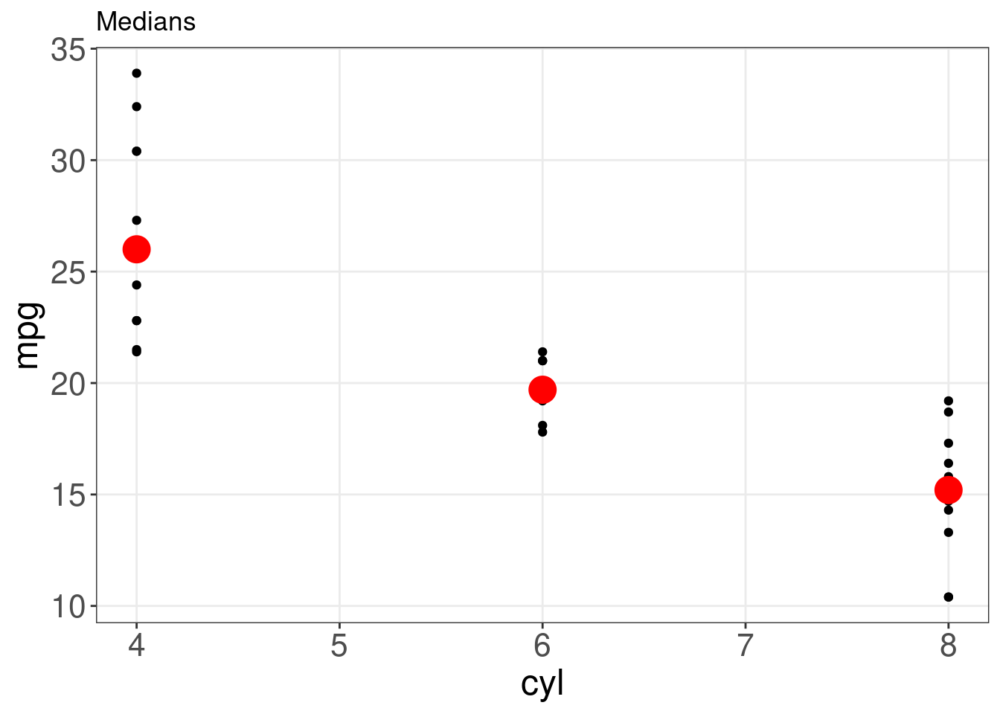

Chapter 13 Using geom_*() to create different plots
Multiple geoms can be used together in a single plot! The order determines how they overlap.

This is a blank plot, before we add any geom_* to represent variables in the dataset.

13.1 Histograms: geom_histogram()
A histogram is an accurate graphical representation of the distribution of numeric data. There is only one aesthetic required: the x variable.
ggplot(penguins, aes(x = bill_length_mm)) + geom_histogram() +
ggtitle("Histogram of penguin bill length ")
13.2 Scatterplot and linear-fit: geom_point() and geom_smooth()
A scatter plot is a great way to visualize data points for two variables. Two aesthetics are required in geom_point(): the x and y variables.

It can, however, be difficult to discern any potential relationship in a scatter plot. You can use geom_smooth() to fit a line through your data with a variety of methods. Here, we will add a linear fit to the scatter plot.
ggplot(mpg, aes(x = displ, y = hwy)) + geom_point() + geom_smooth(method = lm) +
labs(title = "Linear Regression")
13.3 Boxplot: geom_boxplot()
Boxplots are a popular way to plot the distribution of data across some grouping variable, like species. You can specify this grouping variable in aes() using group =, or the aesthetics used to represent the data (fill =, col =, shape =) to generate the boxplot.
ggplot(data = penguins,
aes(x = species,
y = bill_length_mm,
fill = species)) + # specify species as a grouping variable
geom_boxplot() +
labs(title = "Boxplot")
Though boxplots are very popular to summarise data, someone looking at your plot may not intuitively grasp how this summary works and what it might be hiding. Using boxplots well requires an understanding of their anatomy, as seen below. More on the pitfalls of boxplots here.
.](images/boxplot_explain.png)
Figure 13.1: Anatomy of a boxplot by Denise Coleman.
13.4 Annotated boxplot: geom_boxplot() and geom_signif()
To help boxplots speak for themselves, we can add annotations with geom_signif(). The function geom_signif() calculates the significance of a difference between groups and adds the annotation to the plot in a single line of code.
library(ggsignif)
ggplot(data = penguins,
aes(x = species,
y= bill_length_mm,
fill = species)) +
geom_boxplot() +
geom_signif(
# which groups should be compared?
comparisons = list(c("Adelie", "Gentoo")),
map_signif_level=TRUE)
13.5 Violin plot: geom_violin()
Like boxplots, violin plots visualise the distribution of a numeric variable for one or several groups. However, a violin’s shape represents the distribution of points that is obscured in a boxplot’s summarisation, allowing for a more accurate representation of the data (Data-to-Viz)).
Let us compare a boxplot and a violin plot on some generated data. Notice how the violin plot shows us the range and the variability in our data, while the boxplot cannot communicate these two things as intuitively.


We can make a violin plot with our penguins data:
violin <- ggplot(data = penguins,
aes(x = species,
y = bill_length_mm)) +
geom_violin(trim = FALSE, # do not trim the violins' tips if there are outliers
fill = "grey70", # set all the violins to grey
alpha = .5) + # transparency of the fill colour
labs(title = "Violin plot")
violin
Although we have a good idea of how the data is distributed, we can enhance the plot by visualising some summary statistics and the data points. Let us plot a boxplot and the data points on top of our violin plot with geom_violin() + geom_boxplot() + geom_jitter().
violin + # this geom plots the data points with some additional (horizontal) noise to see overlapping points violin
violin + # this geom plots the data points with some additional (horizontal) noise to see overlapping points +
violin + # this geom plots the data points with some additional (horizontal) noise to see overlapping points #
violin + # this geom plots the data points with some additional (horizontal) noise to see overlapping points this
violin + # this geom plots the data points with some additional (horizontal) noise to see overlapping points geom
violin + # this geom plots the data points with some additional (horizontal) noise to see overlapping points plots
violin + # this geom plots the data points with some additional (horizontal) noise to see overlapping points the
violin + # this geom plots the data points with some additional (horizontal) noise to see overlapping points data
violin + # this geom plots the data points with some additional (horizontal) noise to see overlapping points points
violin + # this geom plots the data points with some additional (horizontal) noise to see overlapping points with
violin + # this geom plots the data points with some additional (horizontal) noise to see overlapping points some
violin + # this geom plots the data points with some additional (horizontal) noise to see overlapping points additional
violin + # this geom plots the data points with some additional (horizontal) noise to see overlapping points (horizontal)
violin + # this geom plots the data points with some additional (horizontal) noise to see overlapping points noise
violin + # this geom plots the data points with some additional (horizontal) noise to see overlapping points to
violin + # this geom plots the data points with some additional (horizontal) noise to see overlapping points see
violin + # this geom plots the data points with some additional (horizontal) noise to see overlapping points overlapping
violin + # this geom plots the data points with some additional (horizontal) noise to see overlapping points points
geom_jitter(shape = 16, position = position_jitter(0.2), alpha = 0.3) +
geom_boxplot(width = 0.05)
13.6 Summarise y values: stat_summary()
Adding summary statistics to your plot can help to highlight the key message in your plot. The function stat_summary() can run the summary statistic of your choice using the argument fun =, and add it to your plot according to the geom = you have set in the function.
For example, if we wanted to plot the median of the number of cylinders (cyl) in the mtcars dataset, we would use stat_summary() in the following way:
# plot the median of the number of cylinders
ggplot(mtcars, aes(x = cyl, y = mpg)) + geom_point() + stat_summary(fun = "median",
geom = "point", colour = "red", size = 6) + labs(title = "Medians")Though the median is a helpful summary statistics, it does not inform us about the uncertainty behind it. If we wanted to instead plot the mean of each group with bootstrapped confidence intervals, we could just switch the fun.y = argument:
# plot the mean of each group with bootstrapped confidence
# intervals
ggplot(mtcars, aes(cyl, mpg)) + geom_point() + stat_summary(fun.data = "mean_cl_boot",
colour = "red", size = 1.6) + labs(title = "Means and confidence intervals")## Warning: Computation failed in `stat_summary()`:
## The `Hmisc` package is required.
For more summary statistics, see geom_errorbar(), geom_pointrange(), geom_linerange(), geom_crossbar().
13.7 Representing maps: geom_map()
We will map the arrests per 100,000 residents for murder in each of the 50 US states in 1973 from the USArrests dataset with geom_map().
# load maps library
library(maps)
states_map <- map_data("state") # get a state-level map of the US
# State name is set as rownames. Let's make a new column for these
# that matches the column of state names in our states_map
USArrests$region <- tolower(rownames(USArrests))
# Build our map
ggplot(USArrests,
aes(map_id = region)) + # the variable name to link our map and dataframe
geom_map(aes(fill = Murder), # variable we want to represent with an aesthetic
map = states_map) + # data frame that contains coordinates
expand_limits(x = states_map$long,
y = states_map$lat) +
coord_map() + # projection
labs(x = "", y = "") # remove axis labels13.8 Density plots: geom_density()
A density plot shows the distribution of a numerical variable and it takes only set of numeric values as input.
13.9 Dendogram: ggdendrogram()
Which US states have similar arrest rates?
library(ggdendro)
USArrests.short <- USArrests[1:10, ] # take a small sample for simplicity
hc <- hclust(dist(USArrests.short), "average") # cluster by average distance (UPGMA)## Warning in dist(USArrests.short): NAs introduced by coercion